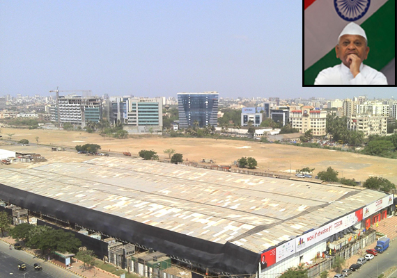

December protests

Anna Hazare on 27 December 2011, again began his fast demanding a stronger version of the ombudsman Lokpal bill at MMRDA ground, Bandra Kurla Complex, Mumbai. The basement of the protest was shifted from Delhi to Mumbai owing to the cold climate in the former city.The members of India Against Corruption, including Arvind Kejriwal and Kiran Bedi insisted Hazare to end his fast taking into consideration his ill health, however the later remained adamant on continuing his protest. Hazare was suffering from cold and mild fever for few days before the fast.[
The participation of people is very low in comparison to August Movement. IAC expected 50,000 people where as only 4,000-5,000 people participated.
Parliament debate
27 December 2011 also saw Lok Sabha debating on Lokpal Bill in the parliament. The debate saw Bhartiya Janata Party leader Sushma Swaraj punching holes in the government's Lokpal bill. She added that the government has been compelled to introduce the bill that envisages the setting up of an effective anti-graft ombudsman.The debate resulted in Lokpal Bill being passed to Rajya Sabha, however was not given constitutional status as expected. The bill that would have granted the Lokpal constitutional status failed as the government did not manage the two-thirds majority] of MPs present and voting on two of the three clauses of the Constitutional Amendment Bill. Its numbers did not cross 273 which is just past the half-way mark of the total number of seats in the Lok Sabha. Both conditions need to be satisfied to amend the Constitution.
The Lokpal Bill was sent for review to Indian President Pratibha Patil the next morning, on 28 December 2011. This is standard operating procedure for any legislation that will have financial implications. She later gave her assent for the Bill to be tabled in the Rajya Sabha, which is scheduled for discussion tomorrow.